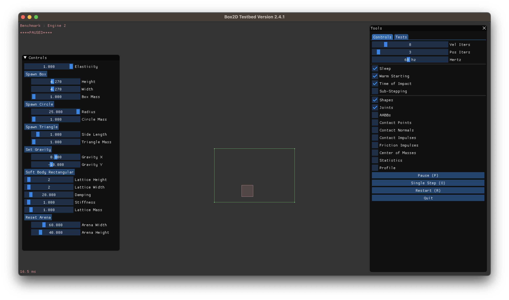
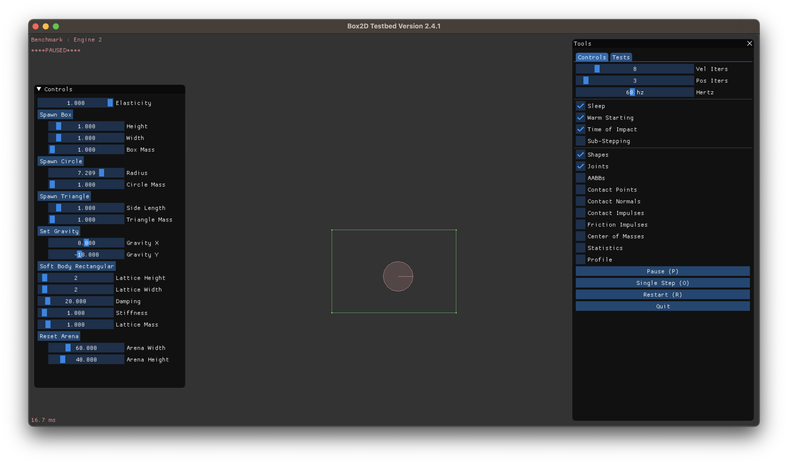
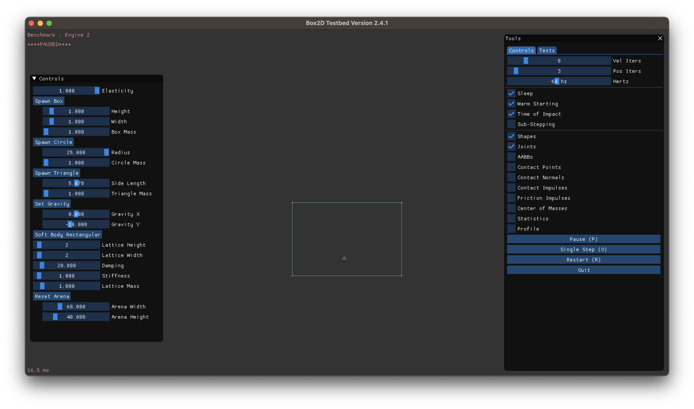
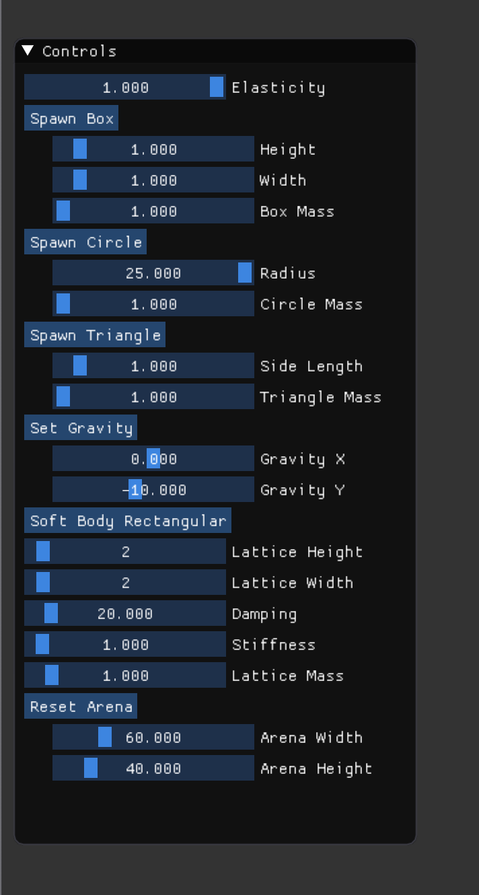

|
|
|
ABSTRACT
In Engine², we created a 2D physics sandbox that gives the user the ability to spawn objects of different sizes, shapes, and physical properties and drag them around to observe physical interactions. The users can choose between a variety of primitive, rigid body shapes, or a soft body object to spawn, and customize properties such as dimensions, mass, and elasticity. We based the engine off of Box2D, a physics engine built for games, which we then modified to include our own custom, modifiable “playground”. In this playground, the user can add in circles, squares, triangles, rigid and soft bodies to see how they interact with each other by collision or how they would get affected by gravity or other external forces.
KEYWORDS
Border, Collision, Engine, Objects/Primitives/Shapes, Rigid Body Physics, Simulation, Soft Body Physics
Technical Approach
1 INTRODUCTION
Here at Engine², we believe that your fancy GPUs and computing power shouldn’t be used to render scenery, but rather for realistic physics simulations. See, if you really wanted to see low latency, high resolution, real time infinite recursion path tracing, you would just go outside and touch grass. But you know what you can’t do in real life? Witness perfectly elastic collisions on a zero friction surface. At Engine², we got you covered, from your basic high school physics collisions to realistic soft body simulations.
When beginning our project, after checking out a few options for physics frameworks to base our engine off of, we have decided to use Erin Catto’s Box2D due to its simplicity and ease of access. Box2D contains all of the necessary components to simulate comprehensive physics simulations, and is perfect for our project. After deciding the framework to use, we all downloaded and studied the source code and documentation for Box2D. In doing so, we realized that we could easily create tests and implement our project within the built in testing environment for Box2D, which can simulate an environment with Box2D’s physics simulation engine. Starting from there, we created a new test called Engine2 to begin implementing our project. The Engine2 is based off of the engine already implemented by Box2D but with support for the custom things we wanted to implement.
2 WORLD
In order to contain primitives (also known as “shapes” or “objects”) in our simulation, we created a rectangular border that is not affected by gravity or any other properties of physics. This rectangle will be our “world” in which we spawn primitives and have them interact with each other. This allows us to have a sort of “playground” in which we can test out both our primitives as well as our implementation of collision as well as gravity. We would also not allow primitives to be spawned outside of our square since one of the issues that we noticed with the original Box2D engine was that if we collide two objects with enough force, that object can fly off screen. Additionally, since we implemented soft-body physics, we needed to see how these soft-bodies would interact with the ground/if they get hit on the sides, which would not be possible to see if we did not set some limitations on the world.
To implement the world, we used Box2d’s built in b2body class. Using this, we were able to create walls that stretched from 4 points given by the origin and the width and height of the box. By using a width and height variable, we can make it so that users can easily change the size of the box after starting the program. To actually resize the box, we need to create new “fixtures”, which are what the green walls are formally, stretching between 4 new points given by the new width and height, which were edited through sliders on the UI. A problem we ran into was that when creating new fixtures, the old fixtures weren’t destroyed and instead just ended up overlapping with each other. The Box2D code does give a function to destroy fixtures to solve this problem, and fixtures themselves are inherently linked lists so it would be easy to destroy all fixtures. However, it actually isn’t possible to access these member functions from anywhere since they are not public, so to delete the old fixtures we had to keep track of references to the fixtures elsewhere. After doing that, we were able to successfully resize the arena.

|

|
3 PRIMITIVE GENERATION
The Box2D starter code was very basic and did not include support for
spawning multiple primitives at once, and only allowed the user to spawn
small circles on the interface. This simulation was too simplistic for our
project, so we decided to add support for multiple primitives, including
circles and squares. To do this, we implemented a feature where users can
spawn a selected primitive at the position of their mouse cursor using
shift click. We also added support for dragging primitives around as
opposed to simply spawning them. Secondly, after seeing that we had implemented basic primitives correctly, we created triangles. This was initially difficult to do since for circles and squares, the b2_API and b2PolygonShape (which the initial primitives were based upon), did not support triangles, so we had to create triangles from scratch. After being able to spawn in triangles, we added in support for collision detection. Currently, spawned primitives have predetermined properties, such as size and mass. We wanted to add in custom properties so that the user can add in extra primitives, and modify their size, mass, etc and we were able to do so by creating sliders that the user can modify and change their parameters.
To implement primitive generation, we knew that we needed to generate b2PolygonShapes or b2CircleShapes. To allow the user to do this at will, we wanted to allow users to spawn primities at their mouse cursor at will. To do this, we used and overrode the ShiftMouseDown function, which was already part of the testing framework. We made it so that when a user shift clicks, the ShiftMouseDown function is called and checks for which type of object we want to spawn and polls the user’s mouse’s position and passes that into our spawnBox/spawnCircle/spawnEquilateralTriangle code. The simulation of the object ie the forces acted upon an object is taken care of by b2Body which comes with the Box2D starter code. This applies forces like a user dragging an object and throwing it and gravity in real time.
|  |  |
|  |
4 FORCES
Currently there are only two forces acting upon the primitives: gravity and user defined force (which can be applied through clicking and then dragging). Users can interact with primitives by clicking on a primitive to lift, push, and pull, essentially dragging them around. By dragging them around, we can artificially create “force” and see how these primitives react to external force as well as if some force was enacted upon, would they still upload Newton’s laws. After some initial debugging, we managed to implement both correctly. So, if you drag a primitive around, it will maintain that momentum until acted upon by another object. Additionally, if we exert some force on a primitive, we can make it bounce off of the walls that we had pre-defined. We had planned to add a feature that changes the mouse cursor to exert a constant pushing force around it, as well as other forces that can be exhibited by the mouse, such as creating a pendulum-like effect with the mouse when holding primities, or maybe sucking in nearby primitives. However, due to time limitations, we had made some progress on these additional features but nothing to the standard we had envisioned so ultimately, we had decided to scrap them.
5 COLLISIONS
Box2D’s source code comes with collisions implemented already so we did not have to implement this. However, collisions currently only act as rigid bodies, but we want to add soft body physics. Currently, primitives only collide with each other by pushing themselves away so that two primitives can never be overlapping. This is known as rigid body physics. We want to implement soft body physics with spring body masses which can exhibit a variety of material properties, such as hardness, strength, and elasticity, which would ultimately allow primities to interact in fundamentally different ways with themselves and the environment. Additionally, the source code did not support all the primitives that we had created on top of the soft body (such as the triangles) so we had to implement these manually. We were able to do so by referring to the source code for inspiration and then making modifications as needed. In addition to that, we had to implement collisions for soft-body physics from scratch, which at first thought seemed daunting since we did not have much to rely upon. However, after looking through project 4’s code and some helpful videos on youtube, we were able to use their high level implementation to create a working version to our standard. The main difference between rigid body physics and soft body physics is that the shape of soft bodies can change, meaning that the relative distance of two points on the object is not fixed. While the relative distances of points are not fixed, the body is expected to retain its shape to some degree (unlike a fluid).
6 UI
We used Imgui to implement the UI for the project. Since our testing area is completely different from the source code, we created an additional UI box. The UI houses the controls for users to interact with the simulation, containing relevant buttons for spawning different shapes changing the gravity, arena size, or elasticity. The UI also contains sliders for adjusting values for the dimensions or mass of spawned objects. This part was not that difficult since it was mainly UI, and the most difficult part was connecting the sliders for the values of the objects with the actual code for changing the values. However, we referred to the source code and modified it accordingly to fit our needs. Namely, we added all the customization for spawning different objects in the UI, with sliders for object sizes and mass, elasticity, gravity, arena size, and soft body properties. Some challenges we ran into while implementing the UI was some clipping with the sliders, where no matter how wide we made the window, the slider would always be wider and clip into the side. We fixed this by setting the sliders to be a constant length.
|  |
7 SOFT BODY PHYSICS
Up until now, we have been discussing 2D physics in the context of
This is in contrast with soft body physics, which are more realistic objects that
Our model uses a mass spring model, in which point masses are connected with springs in a grid. Point masses are nodes with mass, and in our engine, we used tiny rigid body circle, which we implemented much earlier in the project. As for our spring masses, we used elastic distance joints with
Like any model, there are-- of course-- limitations to our soft body implementation. This model cannot simulate more complex deformations such as those seen in non-linear or stress/strain relationships. Our model also does not respond well to compression nor expansion. This is not the only model we have to implement soft body physics-- we could implement a pressure model, for example. These limitations highlight the fact that our simulation can always be better, and there is always room to improve.

|

|

|

|
What We Couldn’t Do / Future Implementations
After implementing soft body physics, we wanted to create a particle based fluid simulation leveraging a similar approach to our previous work with mass point lattice systems. In our simulation, a particle is represented by a struct which contains the shape of the particle, specifically a triangle, along with its velocity and position. We were able to implement the creation of particles but, since representing a fluid requires a lot of particle generation to begin with, our program struggled to keep track of all these particles and simulate the next position and velocity in real time. We were unable to make optimizations due to time constraints of this project although we did attempt to use an array list for better lookup time for velocities and positions of particles.
We also wanted to implement more features for soft body physics. Currently, we only have one representation which is our rectangle shaped soft body. In the future, we want to represent our other two objects, triangle and circle, as soft bodies as well. We also want to add one more property – pressure to our soft body for better shape preservation, elastic response, and overall more accurate deformations.
RESULTS
REFERENCES
list of open source physics engines Documentation of box2D, a really popular 2d physics engine. object deformation video by 3blue1brown Material properties for process simulation Simulating short-range order in compositionally complex materials A comprehensive analysis/explanation of various physics engines Soft Body Physics Explained
CONTRIBUTIONSAaron contributed to implementing rigid bodies, resizing objects and masses, changing gravity, resizing the arena, all relevant UI controls, and the milestone video and presentation. Henry contributed to implementation of rigid bodies and an attempt to make particle-based fluid simulation work and a mouse cursor push function. Wil contributed to implementing rigid bodies, soft bodies, shapes, and the Milestone website. Abrar contributed to